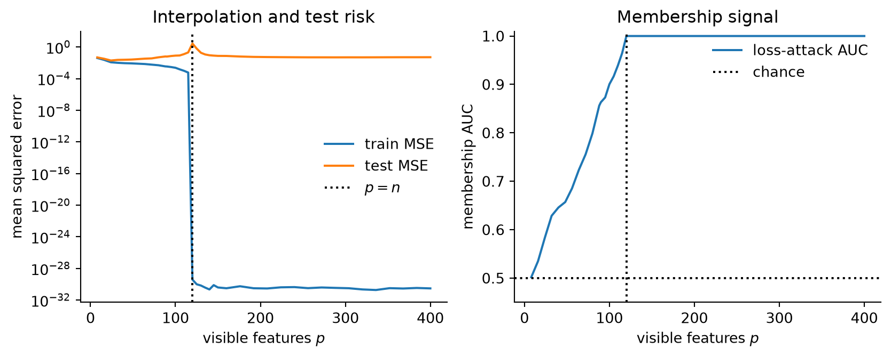

Two reproducible toy audits connect interpolation, membership inference, duplicated canaries, discoverability, and differential privacy.
Author
Diego Filippo Marino
Published
August 14, 2026
Privacy leakage is often explained as a consequence of overfitting: training examples receive lower loss than fresh examples, so an attacker can infer membership. This explanation is useful, but it is too small for modern generative models.
A model can generalize well on average and still memorize rare strings. A string can be memorized yet remain undiscoverable under ordinary prompts. Deduplication can reduce one source of leakage without providing a formal guarantee. Differential privacy can bound the effect of one record while offering little comfort when the same secret appears in many records.
There is no single scalar called “memorization.” This article builds two small audits to make the distinctions concrete. The first connects interpolation and loss-based membership inference. The second studies exact canary continuation in a count-based language model, where duplication and prefix specificity can be controlled independently.
Threat models first
Three privacy questions require different evidence.
Membership inference
Given a known record x, decide whether it was used for training. The attacker needs a membership score, often loss or confidence (Shokri et al. 2017).
Training-data extraction
Produce an unknown training record from the model. Carlini et al. demonstrated a generate-then-rank attack against GPT-2 using calibrated likelihood signals (Carlini et al. 2021).
Extractable memorization
Given a true prefix of length k, does the model emit the exact training continuation? This measures a conditional worst case rather than the success of one discovery algorithm (Carlini et al. 2023).
An audit that answers one question does not automatically answer the others.
Membership inference from loss
Let a model assign per-example loss \ell(x). The simplest membership score is
s(x)=-\ell(x).
\tag{1}
Members tend to score higher if the training procedure fits them more closely. A threshold attack predicts “member” when s(x)>\tau. Its performance depends on the overlap of member and nonmember score distributions, not only on their means.
To study this near interpolation, fit linear regressors to noisy samples in a nested sequence of Gaussian feature spaces. With p visible features and n training points, the minimum-norm solution is
\hat w=\Phi^+y,
\tag{2}
where \Phi^+ is the Moore-Penrose pseudoinverse. Near p\approx n, the design matrix becomes poorly conditioned and fits noise with large coefficients. Far into the overparameterized regime, many interpolating solutions exist and the minimum-norm bias can reduce test error again. This is the linear core of double descent (Belkin et al. 2019).
import numpy as npimport matplotlib.pyplot as pltrng = np.random.default_rng(23)n_train, n_test, max_features =120, 2500, 400X_train = rng.normal(size=(n_train, max_features)) / np.sqrt(max_features)X_test = rng.normal(size=(n_test, max_features)) / np.sqrt(max_features)# The signal lives in the first 20 coordinates. Later coordinates are nuisance# directions that first destabilize interpolation, then create many min-norm fits.beta = np.zeros(max_features)beta[:20] = rng.normal(size=20)y_train = X_train @ beta + rng.normal(0, 0.12, n_train)y_test = X_test @ beta + rng.normal(0, 0.12, n_test)def auc(member_score, nonmember_score):# Probability that a random member receives a higher score, with half credit for ties. combined = np.concatenate([member_score, nonmember_score]) order = np.argsort(combined, kind="mergesort") ranks = np.empty(len(combined), dtype=float) sorted_values = combined[order] start =0while start <len(combined): end = start +1while end <len(combined) and sorted_values[end] == sorted_values[start]: end +=1 ranks[order[start:end]] =0.5* (start + end -1) +1 start = end rank_sum = ranks[:len(member_score)].sum() m, n =len(member_score), len(nonmember_score)return (rank_sum - m * (m +1) /2) / (m * n)p_values = np.unique(np.r_[np.arange(8, 90, 8), np.arange(90, 151, 5), np.arange(160, 401, 16)])train_mse, test_mse, attack_auc, weight_norm = [], [], [], []for p in p_values: Phi_train = X_train[:, :int(p)] Phi_test = X_test[:, :int(p)] w = np.linalg.pinv(Phi_train, rcond=1e-10) @ y_train member_loss = (Phi_train @ w - y_train) **2 nonmember_loss = (Phi_test @ w - y_test) **2 train_mse.append(member_loss.mean()) test_mse.append(nonmember_loss.mean()) attack_auc.append(auc(-member_loss, -nonmember_loss)) weight_norm.append(np.linalg.norm(w))train_mse = np.array(train_mse)test_mse = np.array(test_mse)attack_auc = np.array(attack_auc)weight_norm = np.array(weight_norm)fig, axes = plt.subplots(1, 2, figsize=(8.8, 3.6))axes[0].semilogy(p_values, train_mse, label="train MSE")axes[0].semilogy(p_values, test_mse, label="test MSE")axes[0].axvline(n_train, color="black", ls=":", label="$p=n$")axes[0].set(xlabel="visible features $p$", ylabel="mean squared error", title="Interpolation and test risk")axes[0].legend(frameon=False)axes[1].plot(p_values, attack_auc, label="loss-attack AUC")axes[1].axhline(0.5, color="black", ls=":", label="chance")axes[1].axvline(n_train, color="black", ls=":")axes[1].set(xlabel="visible features $p$", ylabel="membership AUC", title="Membership signal")axes[1].set_ylim(0.45, 1.01)axes[1].legend(frameon=False)for ax in axes: ax.spines[["top", "right"]].set_visible(False)plt.tight_layout()plt.show()

Figure 1: Linear interpolation, double descent, and a loss-threshold membership attack. Test error improves again beyond the interpolation peak while exact fitting keeps membership readily detectable.
The experiment makes the distinction sharper than a simple association. Test risk falls during the second descent, yet membership AUC remains near one because the minimum-norm solution still interpolates every training label. Better test error does not undo the exact member signature. A mean train-test gap also discards the shape and tails of the loss distributions. AUC uses rankings across the distributions, while an operational attack at a very low false-positive rate depends on their extreme tails.
Deep models add further signals. Confidence vectors, per-example gradients, sequence likelihood ratios, and reference-model calibration can reveal membership even when average accuracy looks healthy.
Average generalization misses rare records
Expected test loss weights records by population frequency. A unique secret has negligible contribution to that average. Memorizing it can therefore leave standard generalization metrics unchanged.
This is not a paradox. Learning from a long-tailed distribution can require remembering rare examples that have no close substitutes (Feldman 2020). The same mechanism can improve utility and create privacy risk. “Memorization” is not synonymous with useless overfitting.
For language models, Carlini et al. define a sequence as extractable with k tokens of context if a length-k training prefix causes greedy generation of the exact continuation (Carlini et al. 2023). Their experiments report approximately log-linear increases in extractability with model size, duplication count, and context length. The context result creates a discoverability gap: stored content can remain hidden until the prompt is sufficiently specific.
A canary with controllable duplication
We can reproduce the mechanism, not the scale, with an interpolated n-gram model. Build a background corpus from a 40-token vocabulary. Insert one synthetic 10-token canary between 1 and 64 times. For each context length c, estimate the canary continuation probability with additive smoothing:
Figure 2: Exact canary continuation in a smoothed count model. Repetition strengthens the stored sequence, while longer prefixes make the memorized continuation easier to address.
Longer context functions like a more specific memory address. Duplication strengthens the association stored at that address. Unprompted generation may never discover the canary, even when a nearly complete prefix retrieves it with high confidence.
This is why sampling-based extraction produces a lower bound on memorization. Failure to discover a record is not evidence that no prefix would retrieve it.
Deduplication changes the data geometry
Near-duplicate documents waste training compute and make rare-looking sequences effectively common. Deduplication reduces repeated exposure and also reduces train-test contamination. Lee et al. found that deduplicated language-model corpora can improve both efficiency and evaluation quality (Lee et al. 2022). Carlini et al. observed substantially less extractable memorization for moderately repeated sequences in deduplicated models, while highly repeated tails remained difficult to eliminate (Carlini et al. 2023).
The canary experiment shows the qualitative mechanism. Reducing 64 copies to one lowers count-based confidence at every context length. It does not provide a guarantee for the remaining copy. A sufficiently expressive model can still memorize unique material, particularly when it is unusual or influential.
Deduplication is therefore a data-quality intervention with privacy benefits, not a privacy definition.
Differential privacy answers a narrower, stronger question
A randomized training algorithm M is (\epsilon,\delta)-differentially private if, for adjacent datasets D and D' differing in one record and every measurable output set S,
Privacy accounting composes the loss across training steps (Abadi et al. 2016). Unlike regularization, output rounding, or deduplication, differential privacy bounds what an adversary can infer even with arbitrary auxiliary information and access to the trained parameters.
The adjacency unit matters. Record-level DP protects the addition or removal of one record. If the same secret appears in 64 independently protected records, removing one leaves 63 copies. Group privacy degrades with group size. Deduplication and DP are complementary precisely because they operate on different units.
An audit matrix
No one test covers the full threat surface.
Audit
What it measures
Main blind spot
train-test loss gap
average fit difference
rare and conditional leakage
membership ROC or low-FPR TPR
known-record distinguishability
unknown-record discovery
canary exposure
controlled memorization
representativeness of inserted canaries
generate-then-rank extraction
practical discovery attack
undiscovered memorized tail
prefix-conditioned extraction
worst-case conditional retrieval
assumes knowledge of a true prefix
dedup statistics
repeated exposure
unique sensitive records
DP accountant
formal single-record stability
utility cost and group duplication
A credible release process combines several rows. It also states the adversary’s access: logits, text-only queries, gradients, weights, or a limited API can lead to different conclusions.
What these experiments do not establish
Random Fourier regression is not a language model, and a count-based n-gram model has no distributed representation. The experiments are deliberately mechanism probes. They demonstrate that membership signal can vary sharply around interpolation and that duplication and context specificity are independent axes of extractability.
They do not estimate the leakage of a deployed model. That requires attacks calibrated to the model family, held-out nonmembers from the same distribution, attention to low false-positive regimes, and canaries that reflect plausible sensitive formats without using real secrets.
The main lesson is methodological. Good average generalization is compatible with dangerous tail behavior. Failed unprompted extraction is compatible with prefix-conditioned memorization. Deduplication is compatible with unique-record leakage. A privacy claim is only as precise as its threat model, adjacency unit, and audit procedure.
References
Abadi, Martin, Andy Chu, Ian Goodfellow, et al. 2016. “Deep Learning with Differential Privacy.”Proceedings of the 2016 ACM SIGSAC Conference on Computer and Communications Security, 308–18. https://doi.org/10.1145/2976749.2978318.
Belkin, Mikhail, Daniel Hsu, Siyuan Ma, and Soumik Mandal. 2019. “Reconciling Modern Machine-Learning Practice and the Classical Bias-Variance Trade-Off.”Proceedings of the National Academy of Sciences 116 (32): 15849–54. https://doi.org/10.1073/pnas.1903070116.
Carlini, Nicholas, Daphne Ippolito, Matthew Jagielski, Katherine Lee, Florian Tramer, and Chiyuan Zhang. 2023. “Quantifying Memorization Across Neural Language Models.”International Conference on Learning Representations. https://arxiv.org/abs/2202.07646.
Carlini, Nicholas, Florian Tramer, Eric Wallace, et al. 2021. “Extracting Training Data from Large Language Models.”30th USENIX Security Symposium, 2633–50. https://arxiv.org/abs/2012.07805.
Feldman, Vitaly. 2020. “Does Learning Require Memorization? A Short Tale about a Long Tail.”Proceedings of the 52nd Annual ACM SIGACT Symposium on Theory of Computing, 954–59. https://arxiv.org/abs/1906.05271.
Lee, Katherine, Daphne Ippolito, Andrew Nystrom, et al. 2022. “Deduplicating Training Data Makes Language Models Better.”Proceedings of the 60th Annual Meeting of the Association for Computational Linguistics, 8424–45. https://arxiv.org/abs/2107.06499.
Shokri, Reza, Marco Stronati, Congzheng Song, and Vitaly Shmatikov. 2017. “Membership Inference Attacks Against Machine Learning Models.”2017 IEEE Symposium on Security and Privacy, 3–18. https://doi.org/10.1109/SP.2017.41.
Citation
BibTeX citation:
@online{marino2026,
author = {Marino, Diego Filippo},
title = {A {Generalization} {Gap} {Is} {Not} a {Privacy} {Audit}},
date = {2026-08-14},
url = {https://diegofilippomarino.github.io/Eigenholm/posts/generalization-gap-privacy-audit/},
langid = {en}
}